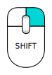

Contents
Aggiornamenti
- Note di rilascio della versione 0.11 (Version 0.11 Release notes/en): per conoscere le nuove funzionalità introdotte con la versione 0.11 di FreeCAD.
- Note di rilascio della versione 0.12 (Version 0.12 Release notes/en): per conoscere le nuove funzionalità introdotte con la versione 0.12 di FreeCAD.
- Note di rilascio della versione 0.13 (Version 0.13 Release notes/en): per conoscere le nuove funzionalità introdotte con la versione 0.13 di FreeCAD.
- Note di rilascio della versione 0.14 (Version 0.14 Release notes/en): per conoscere le nuove funzionalità introdotte con la versione 0.14 di FreeCAD.
- Note di rilascio della versione 0.15 (Version 0.15 Release notes/en): per conoscere le nuove funzionalità introdotte con la versione 0.15 di FreeCAD.
- Note di rilascio della versione 0.16 : per conoscere le nuove funzionalità introdotte con la versione 0.16 di FreeCAD.
- Note di rilascio della versione 0.17 : per conoscere le nuove funzionalità introdotte con la versione 0.17 di FreeCAD.
Prefazione
FreeCAD è una applicazione per la modellazione parametrica di tipo CAD/CAE. È fatto principalmente per la progettazione meccanica, ma serve anche in tutti casi in cui è necessario modellare degli oggetti 3D con precisione e avere il controllo dello storico della modellazione.
Nonostante FreeCAD sia ancora nella fase iniziale del suo sviluppo, offre già un lunga lista (che continua a aumentare) di funzionalità, ma ne mancano ancora molte altre, specialmente rispetto alle soluzioni commerciali, quindi potreste ritenerlo non ancora abbastanza sviluppato per essere usato in ambito produttivo. Ciò nonostante, c'è una comunità in rapida crescita di utenti entusiasti, e si possono già trovare molti esempi di progetti di qualità sviluppati con FreeCAD.
Come tutti i progetti open-source, il progetto FreeCAD non è un lavoro a senso unico che gli sviluppatori vi consegnano. La crescita del progetto, l'acquisizione di nuove funzionalità e la stabilità dell'applicazione (la correzione dei bug) dipendono molto dalla sua comunità. Quindi non dimenticate questo quando iniziate ad utilizzare FreeCAD, e se vi piace, potete contribuire e aiutare il progetto!
Installazione
Per iniziare è necessario scaricare ed installare FreeCAD. Consultare la pagina (Download/en) Download/it per ottenere informazioni sulla versione corrente e sugli ultimi aggiornamenti. Sono disponibili i file di installazione per Windows (.msi), Ubuntu & Debian (.deb), openSUSE (.rpm) e Mac OSX. Dato che FreeCAD è open-source, se siete avventurosi e volete vedere le ultime funzionalità che in questo momento sono in fase di sviluppo, potete anche prelevare il codice sorgente e compilarlo (en).
Esplorare FreeCAD

- La vista 3D che visualizza gli oggetti contenuti nel documento
- La vista ad albero che mostra la gerarchia e lo storico della costruzione di tutti gli oggetti del documento
- L'editore delle proprietà che consente di visualizzare e modificare le proprietà degli oggetti selezionati
- La finestra dei rapporti dove FreeCAD stampa i messaggi di avvisi o di errori
- La console python dove sono visibili tutti i comandi eseguiti da FreeCAD, e in cui è possibile inserire il codice python
- Il selettore degli Ambienti che mostra quello attivo
Il concetto principale è che, dietro la sua interfaccia, FreeCAD è suddiviso in ambienti di lavoro. Ogni ambiente raggruppa gli strumenti idonei a svolgere un compito specifico, come ad esempio lavorare con gli oggetti mesh, oppure disegnare oggetti 2D o schizzi vincolati. È possibile cambiare l'ambiente corrente con il selettore (6). Si può personalizzare il set di strumenti inclusi in ogni ambiente, aggiungere degli strumenti da altri ambienti o anche aggiungere strumenti di propria creazione, che noi chiamiamo macro. Vi è anche un ambiente di lavoro generico denominato Completo che riunisce gli strumenti di uso più comune dagli altri ambienti.
Al primo avvio di FreeCAD viene visualizzato lo start center:

Lo Start Center permette di passare rapidamente a uno degli ambienti di lavoro più comuni, di aprire uno dei file recenti, oppure di vedere le ultime novità dal mondo di FreeCAD. Nelle preferenze è possibile modificare l'ambiente di lavoro predefinito.
FreeCAD permette di interagire con lo spazio 3D in diverse modalità di navigazione selezionabili nel dialogo delle preferenze oppure cliccando con il tasto destro nella vista 3D. Uno di essi è specifico per la Navigazione Touchpad, dove non si usa il tasto centrale del mouse.
Per la modalità di default, la "Navigazione CAD", i comandi sono i seguenti:
| Selezione | Traslazione | Zoom | Rotazione | |
|---|---|---|---|---|

|

|

|
 oppure oppure 
| |
| Premere il tasto sinistro del mouse sull'oggetto che si desidera selezionare. Tenere premuto il tasto Ctrl per selezionare più oggetti. | Fare clic sul pulsante centrale del mouse e muovere il mouse per spostare l'oggetto. Inoltre, per attivare la traslazione, si può tenere premuto Ctrl e cliccare con il tasto destro. In questo modo la funzione rimane attiva, senza impegnare la mano del mouse, e permette l'uso della rotellina per lo zoom, fino a quando il tasto Ctrl non viene rilasciato. |
Ruotare la rotellina del mouse per ingrandire e ridurre. | Premere e mantenere premuto il tasto centrale del mouse, fare clic con il pulsante sinistro, o destro, del mouse su qualsiasi parte visibile di un oggetto e trascinarlo nella direzione desiderata. La posizione del cursore nel momento in cui si preme il pulsante centrale del mouse determina il centro di rotazione. La rotazione funziona come nel caso di una palla che ruota attorno al suo centro. Se i tasti vengono rilasciati prima di arrestare il movimento e se l'opzione Abilita animazione è attivata, l'oggetto continua la rotazione automaticamente. Un doppio clic con il tasto centrale del mouse su qualsiasi parte di un oggetto imposta un nuovo centro di rotazione e di zoom in tale punto. Il secondo metodo può essere utile ai mancini. Inoltre, per attivare la rotazione, si può tenere premuto Maiusc (Shift) e cliccare con il tasto destro. In questo modo la funzione rimane attiva, senza impegnare la mano del mouse, e permette l'uso dello zoom, fino a quando il tasto Maiusc non viene rilasciato.
| |

|

|
 | ||
| Premere Ctrl, cliccare sul tasto destro, rilasciarlo e spostare il mouse per spostare la vista (rev 0.17) | Premere Ctrl, cliccare sul tasto destro, rilasciarlo, cliccare sul tasto sinistro, rilasciarlo e spostare il mouse per zoommare (rev 0.17) | Premere Maiusc, cliccare sul tasto destro, rilasciarlo e spostare il mouse per ruotare la vista (rev 0.17) |
{kind=link}
Inoltre, sono disponibili alcune viste preconfigurate (dall'alto, laterale, frontale, ecc) accessibili dal menu Visualizza → Viste standard oppure tramite i pratici comandi veloci dei tasti numerici ( 1, 2, 3 etc...)
Primi passi con FreeCAD
L'obiettivo di FreeCAD è quello di consentire di creare dei modelli 3D di alta precisione mantenendo uno stretto controllo sui modelli per essere in grado di tornare indietro nello storico della modellazione e di variare i parametri, e alla fine di costruire quei modelli (attraverso la stampa 3D, CNC o anche la costruzione in cantiere). È quindi molto diverso da alcune applicazioni 3D realizzate per altri scopi, come ad esempio per i film di animazione o per i giochi. La sua curva di apprendimento può essere ripida, specialmente se questo è il primo contatto con la modellazione 3D. Quando si rimane bloccati in un certo punto, ricordarsi che nel FreeCAD forum c'è una comunità amichevole di utenti può essere in grado di fornire un aiuto in breve tempo.
L'ambiente di lavoro con cui iniziare a lavorare in FreeCAD dipende dal tipo di lavoro si intende realizzare. Quando si ha intenzione di lavorare su modelli meccanici, o più in generale su qualsiasi oggetto di piccole dimensioni, probabilmente si vuole provare Part Design. Se si lavora in 2D, allora conviene passare all'ambiente Draft, o all'ambiente Sketcher quando servono i vincoli. Se si vuole fare BIM, avviare l'ambiente Architettura. Se si lavora con il disegno navale, è disponibile uno speciale ambiente Ship. Se si proviene dal mondo di OpenSCAD, si può provare l'ambiente OpenSCAD.
È possibile commutare gli ambienti di lavoro in qualsiasi momento, e anche personalizzare il proprio ambiente preferito aggiungendovi degli strumenti di altri ambienti.
Lavorare con gli ambienti PartDesign e Sketcher
PartDesign è fatto appositamente per costruire oggetti complessi, partendo da forme semplici a cui aggiungere o rimuovere dei pezzi (che noi chiamiamo "caratteristiche"), fino a ottenere l'oggetto finale. Tutte le caratteristiche applicate durante il processo di modellazione vengono memorizzate in una vista separata denominata vista a albero, che contiene anche gli altri oggetti del documento. Si può pensare ad un oggetto di PartDesign come a una successione di operazioni, ciascuna applicata al risultato di quella precedente, formando una grande catena. Nella vista ad albero, si vede l'oggetto finale, ma è possibile espanderla e recuperare tutti gli stati precedenti, e modificare i loro parametri, questo aggiorna automaticamente l'oggetto finale.
L'ambiente PartDesign fa uso importante di un altro ambiente, l'ambiente Sketcher. Sketcher permette di disegnare forme 2D vincolate, il che significa che alcune parti della forma 2D possono avere dei vincoli. Ad esempio, è possibile disegnare un rettangolo e impostare un vincolo di lunghezza per uno dei suoi lati. Quel lato quindi non può più essere ridimensionato, fino a quando il vincolo non viene modificato.
Queste forme 2D realizzate con lo sketcher sono molto utilizzate in PartDesign, ad esempio per creare i volumi 3D o per disegnare le aree sulle facce dell'oggetto che devono essere scavate dal volume principale. Ecco un tipico flusso di lavoro PartDesign:
- Creare un nuovo schizzo
- Disegnare un contorno chiuso (assicurarsi che tutti i punti sono uniti)
- Chiudere lo schizzo
- Espandere lo schizzo in un solido 3D con lo strumento Pad
- Selezionare una faccia del solido
- Creare un secondo schizzo (questa volta sarà disegnato sulla faccia selezionata)
- Disegnare una forma chiusa
- Chiudere lo schizzo
- Creare uno scavo con il secondo schizzo, sul primo oggetto
Si ottiene un oggetto simile a questo:

In qualsiasi momento è possibile selezionare gli schizzi originali e modificarli oppure modificare i parametri delle operazioni di estrusione o di scavo, l'oggetto finale viene automaticamente aggiornato.
Lavorare con gli ambienti Draft e Arch
Gli ambienti Draft e Arch si comportano in modo un po' diverso dagli altri ambienti di lavoro di cui sopra, anche se seguono le regole comuni di FreeCAD. In breve, Sketcher e PartDesign sono utilizzati principalmente per la progettazione di singoli pezzi, invece Draft e Arch sono concepiti per facilitare il lavoro quando si opera con diversi oggetti semplici.
L'ambiente Draft offre degli strumenti 2D in parte simili a quelli che si possono trovare nelle applicazioni tradizionali di CAD 2D quali AutoCAD. Però, il disegno 2D è lontano dagli scopi di FreeCAD, quindi non aspettatevi di trovare in esso la gamma completa di strumenti offerta da queste applicazioni dedicate. La maggior parte degli strumenti di Draft lavorano, non solo in un piano 2D, ma anche nello spazio 3D, e beneficiano degli speciali sistemi di supporto come il Piano di lavoro e lo Snapping.
L'ambiente Arch aggiunge a FreeCAD gli strumenti BIM che consentono di costruire i modelli architettonici con degli oggetti parametrici. L'ambiente Arch si basa molto sugli altri moduli come Draft e Sketcher. Tutti gli strumenti di Draft sono presenti anche nell'ambiente Arch e molti strumenti di Arch usano i sistemi di supporto di Draft.
Un tipico flusso di lavoro con gli ambienti Arch e Draft potrebbe essere:
- Disegnare un paio di linee con lo strumento Linea di Draft
- Selezionare tutte le linee e premere lo strumento Muro per costruire un muro su ciascuna di esse
- Unire le pareti selezionandole e premendo lo strumento Aggiungi di Draft
- Creare un oggetto Piano, e posizionare in esso i Muri lavorando nella Vista ad albero
- Creare un oggetto Edificio, e posizionare in esso il Piano lavorando nella Vista ad albero
- Creare una Finestra cliccando sullo strumento Finestra, selezionare un modello predefinito nel suo pannello, quindi fare clic su una faccia di un muro
- Aggiungere le Quote impostando prima il piano di lavoro, se necessario, quindi utilizzando lo strumento Dimension di Draft
Si ottiene un oggetto simile a questo:

Maggiori informazioni si trovano nella sezione Tutorial.
Script
Infine, una delle più potenti caratteristiche di FreeCAD che è l'ambiente di script. Dalla console Python integrata (o tramite qualsiasi altro script Python esterno), è possibile accedere a quasi tutte le parti di FreeCAD, creare o modificare le geometrie, modificare la rappresentazione degli oggetti nella vista 3D, oppure accedere e modificare l'interfaccia di FreeCAD. Gli script Python possono essere utilizzati anche all'interno delle macro che forniscono un metodo facile e veloce per creare combinazioni di comandi personalizzati.